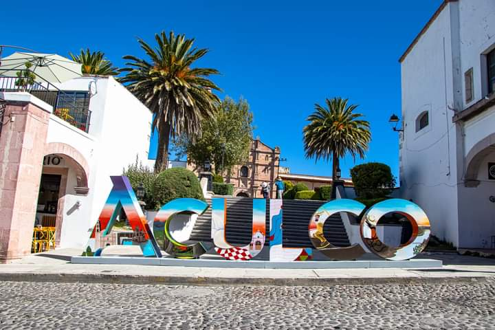

Un Poco de Historia
Aculco que en Náhuatl significa "Donde el agua tuerce"
Casco Antiguo
Volver al indice 

Aculco es formado por los Otomíes alrededor del año 10 de nuestra, y conquistado más tarde por los Mexicas en el siglo XIV. Su nombre actual proviene de la lengua náhuatl y significa “lugar donde tuerce el agua”. En 1540 los españoles construyen la parroquia y el convento de San Jerónimo; aquí los independentistas sufren su primera gran derrota en 1810; acabada la independencia, para 1825 surge el municipio.
Ubicacion
Volver al indice 
Poblacion
Volver al indice 
- Poblacion: 44.823 (2010)
El Municipio de Aculco se localiza al noroeste en el territorio del Estado de México, se encuentra a 107 km de la Ciudad de Toluca, capital de la entidad; la carretera panamericana cruza el municipio, en los límites con Querétaro. Al llegar por esta carretera la primera vista al municipio son los arcos de la desviación y el imponente cerro de Ñadó. La desviación a Aculco, en el ejido de San Jerónimo, nos indica 4 km hacia el Oriente, para llegar a la cabecera municipal, Aculco de Espinosa.
Limites
Volver al indice 
- En el Municipio de Aculco tiene los siguientes límites:
- Norte: Municipio de Polotitlán, Estado de México y el Municipio de San Juan del Río Querétaro.
- Sur:Acambay, Municipio del Estado de México.
- Este: Jilotepec y San Andrés Timilpan, Del Estado de México.
- Oeste: Municipio de Amealco del Estado de Querétaro.
Extencion
Volver al indice 

De acuerdo con el Nomenclátor de localidades del Estado de México, 1995, el municipio de Aculco tiene 465.697 km2 de superficie.

Topografia
Volver al indice 
- Altura sobre el nivel del mar
- La cabecera municipal, Aculco de Espinosa se encuentra a 2385 metros sobre el nivel del mar, Matlavath a 2 150 y la ranchería de barrancas a 2 665; los dos últimos poblados marcan el nivel más alto y bajo en el municipio.
- A la distancia, se levanta el peñón de Ñadó, que rebasa los 3 000 metros sobre el nivel del mar.